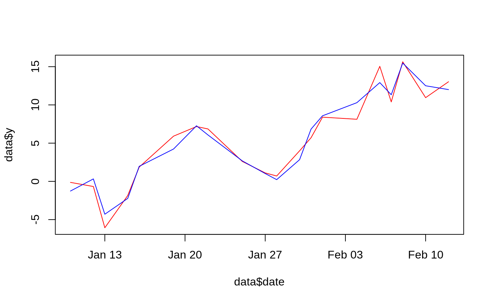

Runner examples
runner_examples.RmdThe most fundamental function in runner package is runner. With runner::runner one can apply any R function on running windows. This tutorial presents set of examples expaining how to tackle some tasks. Some of the examples are referenced to original topic on stackoverflow.

Number of unique elements in 7 days window
library(runner)
x <- sample(letters, 20, replace = TRUE)
date <- as.Date(cumsum(sample(1:5, 20, replace = TRUE)), origin = Sys.Date()) # unequaly spaced time series
runner(x, k = 7, idx = date, f = function(x) length(unique(x)))## [1] 1 2 2 3 2 3 3 2 2 3 3 3 2 2 3 3 4 5 3 3weekly trimmed mean
x <- cumsum(rnorm(20))
date <- as.Date(cumsum(sample(1:5, 20, replace = TRUE)), origin = Sys.Date()) # unequaly spaced time series
runner(x, k = 7, idx = date, f = function(x) mean(x, trim = 0.05))## [1] -0.65556068 -0.07258204 0.08120707 0.44250025 1.59591613
## [6] 2.85262992 3.00858613 2.93699652 2.64001578 2.77296074
## [11] 2.65046072 3.04706669 3.56219554 5.41347636 6.40385921
## [16] 5.72441930 5.20739755 5.11052246 5.07066390 5.156901032 weeks regression
x <- cumsum(rnorm(20))
y <- 3 * x + rnorm(20)
date <- as.Date(cumsum(sample(1:3, 20, replace = TRUE)), origin = Sys.Date()) # unequaly spaced time series
data <- data.frame(date, y, x)
running_regression <- function(idx) {
predict(lm(y ~ x, data = data))[max(idx)]
}
data$pred <- runner(seq_along(x), k = 14, idx = date, f = running_regression)
plot(data$date, data$y, type = "l", col = "red")
lines(data$date, data$pred, col = "blue")
Rolling sums for groups with uneven time gaps
##
## Attaching package: 'dplyr'## The following objects are masked from 'package:stats':
##
## filter, lag## The following objects are masked from 'package:base':
##
## intersect, setdiff, setequal, unionset.seed(3737)
df <- data.frame(
user_id = c(rep(27, 7), rep(11, 7)),
date = as.Date(rep(c('2016-01-01', '2016-01-03', '2016-01-05', '2016-01-07', '2016-01-10', '2016-01-14', '2016-01-16'), 2)),
value = round(rnorm(14, 15, 5), 1))
df %>%
group_by(user_id) %>%
mutate(
v_minus7 = sum_run(value, 7, idx = date),
v_minus14 = sum_run(value, 14, idx = date))## # A tibble: 14 x 5
## # Groups: user_id [2]
## user_id date value v_minus7 v_minus14
## <dbl> <date> <dbl> <dbl> <dbl>
## 1 27 2016-01-01 15 15 15
## 2 27 2016-01-03 22.4 37.4 37.4
## 3 27 2016-01-05 13.3 50.7 50.7
## 4 27 2016-01-07 21.9 72.6 72.6
## 5 27 2016-01-10 20.6 55.8 93.2
## 6 27 2016-01-14 18.6 39.2 112.
## 7 27 2016-01-16 16.4 55.6 113.
## 8 11 2016-01-01 6.8 6.8 6.8
## 9 11 2016-01-03 21.3 28.1 28.1
## 10 11 2016-01-05 19.8 47.9 47.9
## 11 11 2016-01-07 22 69.9 69.9
## 12 11 2016-01-10 19.4 61.2 89.3
## 13 11 2016-01-14 17.5 36.9 107.
## 14 11 2016-01-16 19.3 56.2 119.Unique for specified time frame
library(runner)
df <- read.table(text = " user_id date category
27 2016-01-01 apple
27 2016-01-03 apple
27 2016-01-05 pear
27 2016-01-07 plum
27 2016-01-10 apple
27 2016-01-14 pear
27 2016-01-16 plum
11 2016-01-01 apple
11 2016-01-03 pear
11 2016-01-05 pear
11 2016-01-07 pear
11 2016-01-10 apple
11 2016-01-14 apple
11 2016-01-16 apple", header = TRUE)
df %>%
mutate(
distinct_7 = runner(category, k = 7, idx = date, f = function(x) length(unique(x))),
distinct_14 = runner(category, k = 14, idx = date, f = function(x) length(unique(x)))
)## user_id date category distinct_7 distinct_14
## 1 27 2016-01-01 apple 1 1
## 2 27 2016-01-03 apple 1 1
## 3 27 2016-01-05 pear 2 2
## 4 27 2016-01-07 plum 3 3
## 5 27 2016-01-10 apple 3 3
## 6 27 2016-01-14 pear 3 3
## 7 27 2016-01-16 plum 3 3
## 8 11 2016-01-01 apple 3 3
## 9 11 2016-01-03 pear 3 3
## 10 11 2016-01-05 pear 3 3
## 11 11 2016-01-07 pear 3 3
## 12 11 2016-01-10 apple 3 3
## 13 11 2016-01-14 apple 3 3
## 14 11 2016-01-16 apple 3 3